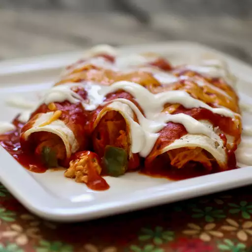

Chichen Enchiladas Recipe

Description
This chicken enchilada recipe is easy to make with tortillas, tender chicken, and a deliciously cheesy sauce for a family-pleasing Mexican meal.
Ingredients
- Tortillas
- Tender Chicken
- Cheesy Sauce
Steps
- Cook the chicken, slice it into cubes, then return it to the skillet.
- Add the onion, a cup of cheese, sour cream, and dried herbs.
- Melt the cheese. Stir in tomato sauce, green pepper, garlic, chili powder, and salt.
- Fill the enchiladas and roll them up. Arrange them in a baking dish.
- Top with taco sauce and remaining cheese. Bake until the cheese is melted.
Resource
Chicken Enchiladas